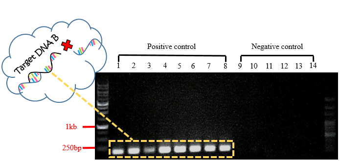

Methicillin-resistant Staphylococcus aureus (MRSA) is a major pathogen in hospitals and the community. It causes a wide range of infections affecting the superficial skin and soft tissue, as well invasive infections including pneumonia, bloodstream infections, bone and joint infections.
With a single electrode, DNA biosensor can detect a DNA fragment of only 16~30-mer length because of the limitation by the length of probe. However, based on the properties that electrons can be transferred through the DNA, we use two electrodes with same probe length as single electrode, it can detect more than 1000-mer by analyzing the conductance. Besides, the target DNA needs to hybridize with two different probes to let electrons be transferred through the DNA.
-
Genomic dna extraction
×
Genomic dna extraction
Preprocess
- Alter 1 ml USA300 culture to 1.5 ml microcentrifuge tube
- Centrifuge at 13000 rpm for 1 minutes at 25 ℃
- Add 100 ul TE buffer to the tube and pipetting the pellet
- Add 20 ul [100 mg/ml lysozyme and 10 mg/ml lysostaphin]
- Put in the 37 ℃ incubator for 60 minutes and gently shake it every 10 minutes
Cell lysis
- Add 300 ul cell lysis buffer
- Put in the 60 ℃ incubator and gently shake it every 3 minutes, and cool down for 5 minutes
RNA removal
- Add 1.5 ul RNase A and put at room temperature for 5 minutes
Protein removal
- Add 100 ul protein remove buffer
- Put it on the ice for 10 minutes and precool the centrifuge
- Centrifuge at 13000 rpm for 10 minutes at 4 ℃
DNA precipitation
- Place the supernatant to a new 1.5 ml microcentrifuge tube
- Add 300 ul isopropanol
- Centrifuge at 13000 rpm for 5 minutes at 4 ℃
- Add 300 ul 70% ethanol
- Centrifuge at 13000 for 3 minutes at 25 ℃
- Drain the ethanol at vacuum environment
DNA rehydration
- Add 100 ul DNA hydration buffer
- Put in the 60 ℃ incubator for 60 minutes
To ensure the quality of our DNA, we use nanodrop to make sure our genomic DNA is successfully extracted. The ratio of the absorbance at 260 and 280 nm (A260/280) is used to assess the purity of nucleic acids (Table. B). For pure DNA, A260/280 is widely considered at 1.8. so in our table, almost all sample we used are pure DNA. And A260/A230 also means the purity of nucleic acids but it is compare to like RNA or other substance. The best value should be 2, our DNA sample is located at 0.9-1.7. Although they aren’t perfect but are enough for our experiment.
-
Real-Time Polymerase Chain Reaction
×
Real-Time Polymerase Chain Reaction
- deploy the solution containing 1 ul sample, 10 ul KAPA SYBR® FAST qPCR Master Mix (2X), 0.4 ul forward primer, 0.4ul reverse primer, 0.4 ul KAPA SYBR® FAST ROX Low Reference Dye (50X), and 7.8 ul DEPC water per tube.
- ( USA300 + DEPC water ) * 3 repetition * 1 ( w553, w554 ) = 6 tubes.
- Run the qPCR machine.
- Denature at 95 ℃ for 3 minutes.
- 40 cycles ( denature at 95 ℃ for 3 seconds, and annealing at 50 ℃ for 30 seconds ).
- Denature at 95 ℃ for 15 seconds, annealing at 60 ℃ for 1 minute, and extension at 95 ℃ for 15 seconds.
To ensure mecA is the specific gene in MRSA, we used 8 positive controls and 6 negative controls to run the real-time PCR machine with our primer. The positive control one by one is USA300, COL, SA40, SA957, LSA261, LTF01, VA109 and VB188, and the negative control one by one is SA113, E.coli, Aspergillus Niger, Penicillium, Pneumococcus, Lake Water and DEPC Water. We repeated three times each sample because it will be more accurate. The CT means how many cycles does the DNA concentration reach in the threshold that the machine can detect. When the value is smaller, the DNA concentration or quantity is higher. Look at table 2, there is two part in the table – positive ( left part ) and negative ( right part ). The CT of positive is between 14 to 23 cycles and negative is between 30 to 37 cycles. This mean the sequence we want in the positive is correctly magnify.
Besides the CT in the table 2, we also use melting curve to analyze our outcome by real-time PCR. Melting curve means the value that the temperature when half of the target DNA is annealed together. Look at the figure 1, the curve position of positive control is different from negative control. And we use gel electrophoresis to prove the size of DNA is correct in positive control and incorrect in negative control. This experiment can prove our specific primer.
-
Polymerase Chain Reaction
×
Polymerase Chain Reaction
- Deploy the solution which contain 2.5 ul sample, 2 ul forward primer, 2 ul reverse primer, 25 ul GoTaq® Green Master Mix (2X), and 18.5 ul ddH2O per tube.
- Run the PCR machine.
- Denature at 94 ℃ for 3 minutes.
- 35 cycles ( denature at 94 ℃ for 30 seconds, annealing at 55 ℃ for 30 seconds and extension at 72 ℃ for 5 minutes ).
- Extension at 72 ℃ for 5 minutes
PCR is the most important part of our molecular biology experiments, and it is very simple in principle but indispensable. PCR is a tool we used to help verify the correctness of sequences, whether they are probe DNA or genomic DNA. In addition, it is conceptually related to our design concept. Since the capture probes at both electrodes are aimed at the fragments of 999 bp, which is contained in mecA gene. DNA fragments that are too short or too long may influnce the result. Hence, we prepared following materials by PCR after DNA extraction: mecA gene fragments whose length are exactly 999 bp and other than 999 bp, negative control gene fragments whose length are just 999 bp and other than 999 bp, and water (as one of the negative controls), using these materials to test the hypothesis mentioned above.
Number 1 to 8 are positive controls extracted from different strains of MRSA, the order is followed by SA40, SA957, LSA261, VA109, VB188, LTF01, USA300 and COL. Number 9 to 14 are negative controls and the order is followed by MSSA genomic DNA, Ecoli genomic DNA, Streptococcus pneumoniae genomic DNA, Rhizopus stolonifera genomic DNA, Penicillium genomic DNA, and water.
In Fig.2, each band in positive controls were observed to have the length of about 999 bp, and there wasn't any band observed in negative controls. With this experiment, we inference that the target DNA in length of 999bp can hybridize with the capture probes and then power on the current on biochip FF successfully.

In Fig.3, each band in positive controls were observed to have the length of about 175 bp, and there wasn't any band observed in negative controls. The sequence of these bands are included in the 999 bp-mecA gene fragments. Our purpose is to prove that even if the target DNA are capable to hybridize with only one probe on biochip FF, it's still not long enough, so biochip FF cannot be conducted.
In Fig.4, each band in positive controls were observed to have the length of about 1563 bp, and there wasn't any band observed in negative controls. With this experiment and the following gel extraction, we can test whether the target DNA in length of 1563 bp can successfully hybridize with the capture probes, and then power on the current on biochip FF in subsequent experiment.
In Fig.5, each band in positive controls were observed to have the length of about 480 bp, and there wasn't any band observed in negative controls. According to primers we designed, a 480 bp-band a part of mecA gene but not included in the 999 bp-mecA gene. So, it is presumably that this 480 bp-mecA gene can neither hybridize the capture probes (aimed at specific 999 bp-fragment contained in mecA gene) nor power on biochip FF.
Results from PCR have common sites that there weren't any bands observed in every negative control; that is, the primers we designed are specific to mecA gene, and they are fiseable DNA probes. After purifing these positive DNA fragments (175 bp, 480 bp, 999 bp, 1563 bp) by gel extraction, the hypothesis mentioned before was tested on biochip FF.
-
DNA digestion
×
DNA digestion
DNA digestion
- culture the plasmid overnight.
- place 1 ml plasimid culture to a 1.5 ml microcentrifuge tube and centrifuge at 13000 for 1 mins.
- flow out the supernatant
- repeat step 2,3 for 3 times
- add 400 ul PD1 buffer and strongly pipet until the pellet resuspended.
- add 400 ul PD2 buffer and gently pipet it.
- add 600 ul PD3 buffer and gently pipet it.
- place the fiuld to a PG column and let the DNA bind for 5 mins.
- centrifuge at 13000 rpm for 5 mins.
- repeat step 8 for 3 times.
- flow out the supernatant.
- add 400 ul W1 buffer.
- centrifuge at 13000 rpm for 1 mins.
- flow out the supernatant.
- add 600 ul wash buffer.
- centrifuge at 13000 rpm for 1 mins.
- flow out the supernatant.
- centrifuge at 13000 rpm for 3 mins to dry out.
- put the PG column in a new microcentrifuge tube.
- add 50 ul ddH2O.
- centrifuge at 7000 rpm for 2 mins.
- repeat step 21 for 3 times
- add the 3.1 buffer, restriction enzyme we choose and ddH2O to digest the DNA overnight.>
- do the gel electrophoresis to check the result
- gel extraction
To purified target DNA, not only did we use PCR, but we also use DNA digestion to produce the DNA.
We use PET-28 for our plasmid, and we choose two kinds of digestion. One is single digestion and the other is double digestion. And the restriction enzyme we use is EcoRV, XhoI and HincII. They can cut about 1400-1500 mers dor our DNA.
This experiment is conducted in order to prove that the inappropriate length of DNA sequence, which is come from bacteria that doesn't contain mecA gene, cannot hybridize with DNA probes on FF. In the electropherogram, number 1 and number 2 are identical samples. The plasmids were digested with enzymes Sac 1 and Sal 1. As the result, bands in length about 5000bp and 980bp were observed in the electropherogram. Since the probes on FF are aimed to hybridize with the 999bp - sequence, these bands will neither hybridize with the DNA probes nor power on the current on FF after being purified.
-
DNA Extraction
×
DNA extraction
gel extraction
- cut down the gel which contain the band we want
- add 500 ul buffer B and vortex
- put in the 60 ℃ incubator for 10 minutes and vortex it per 3 minutes
- cool down
- place the fluid to the PG column and centrifuge at 14000 rcf for 30 seconds, and remove the supernatant
- add 400 ul buffer W1 and centrifuge at 14000 rcf for 30 seconds, and remove the supernatant
- add 600 ul buffer W2 and centrifuge at 14000 rcf for 30 seconds, and remove the supernatant
- centrifuge at 14000 rcf for2 minutes
- put the PG column in a new microcentrifuge tube
- add 50 ul preheat ddH2O and put at the heating plate for 5 minutes at 55 ℃
- centrifuge at 14000 rcf for 3 minutes
We use gel extraction to isolate a desired fragment of intact DNA from an agarose gel following agarose gel electrophoresis.
- DNA Denaturation
When detection is processed on chip FF, the DNA in the sample will hybridize to the DNA probes on the electrode. Therefore, we must first denature the DNA in the sample from double-stranded to single-stranded, so that the complementary hybridization is available. The double-stranded DNA can be opened by heating the sample to 95 degrees for 10 minutes, and the sample contains ssDNA is immediately added into 2X SSC buffer and store in 4 degrees in order to keep it from renaturing.
In order to improve the convenience and stability of the device in the overall design, we have made some modifications at the two terminals of the DNA bridge, that were, the DNA probes. First, after measuring the electric current after power-on and analyzing the conductivity, we hope to observe the occurrence of conduction more intuitively. Therefore, the 3' and 5' terminals of the probes are respectively connected with the fluorescent substances Cy3 and Cy5 to confirm the correctness of experiment result again. In addition, in order to make a more stable binding of the DNA probes to the electrodes, the gold electrode is modified with SH, and the graphene is modified with NH2 to enhance the binding between the probes and the electrodes.
In the experimental content, we determined the presence of mecA gene in various strains of MRSA by PCR results to reflect the credibility of the subsequent detection results and confirm the corresponding probe sequences. There are many reasons for choosing PCR. First, PCR is currently the most widely used method for gene detection. Almost all related literatures for detecting MRSA genes use PCR. In addition, the most important reason is that the chips we designed are designed to surpass existing technology. Therefore, PCR is naturally the technology we expect to surpass. PCR could be chosen for the best comparison. The results of qPCR corroborate the specificity of our designed primers for mecA gene, and the purpose is also that support the correctness of the test results. In the part of molecular biology experiments, all experimental designs and results use to demonstrate the validity of the materials we use on the chips. At present, mecA is the only target gene, and in the future, these technologies can be used to continue to develop more probe sequences capable of solving the drug resistance genes harmful to humans, and achieve the final detection purpose.
Different lengths of target DNA from MRSA are prepared by using polymerase chain reaction and DNA extraction. Furthermore, we used polymerase chain reaction to confirm that our DNA probe is specific to our target DNA. Therefore, we can assume that our capture probe will work on the “FF”.